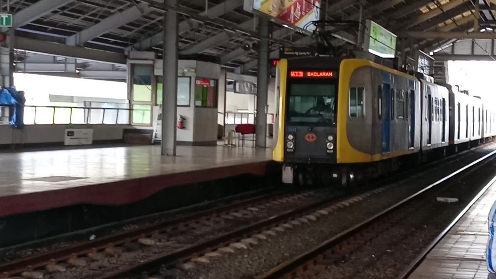

LRT-1 rides
Back
Home
Table of contents:Ride from Libertad to EDSA
Ride from Baclaran to Libertad
Ride from EDSA to Libertad
Ride from Libertad to Baclaran
More LRT-1 ride contents
Home
Table of contents:
Ride from Libertad to EDSA
Justin decided to go to LRT-1 because the jeepneys are too long to wait. As his first time to ride after 4 years, he so happy because it's too long not seen the trains and stations. His first ride was on November 17, 2022.And he decided to take a video when the train is coming. At first he so scared for taking video because the guards can catch me. After I asked rail enthusiasts of the following days, they said that taking pictures and videos of LRT-1 is allowed because LRT-1 is the most unrestricted train line in terms of taking pictures and videos.
His first video ever inside of LRT-1.
Until now, his destination is mostly at EDSA because his home was near at EDSA. In every school days, he ride mostly from Libertad to EDSA.
Ride from Baclaran to Libertad
Inside of Baclaran station on December 15, 2022.

3rd gen train at Baclaran station on December 15, 2022.
Video
He started to ride from Baclaran to Libertad on December 15, 2022 after years.
His ride from Baclaran to Libertad is almost monthly after years.
Some of his rides from Baclaran to Libertad was on:
Ride from EDSA to Libertad
Justin ride LRT-1 from EDSA to Libertad after his trainspotting to upload his videos at Libertad by connecting to high-speed free WiFi. This kind of ride was started on February 1, 2023 and is the first time to ride in this kind of route.
Rear cabin view ride on February 1, 2023.
Video
Ride from Libertad to Baclaran
On February 1, 2023, he rode LRT-1 from Libertad and his destination was not EDSA, it's Baclaran to make his ride until the end of LRT-1 line.Unfortunately, starting February 20, his ride were ended at EDSA station due to end of class time were adjusted from 5:30 PM to 7:00 PM cause of the end of daylight saving time in the city.

Justin rode on 3rd gen train going to Baclaran on February 1, 2023.
Video

People line up to get out from the station since the train switched the tracks on February 13, 2023.
Video
Some of his rides from Libertad to Baclaran was on:
If you want to view and watch LRT-1 rides by Justin, please click
here .